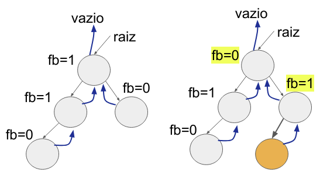
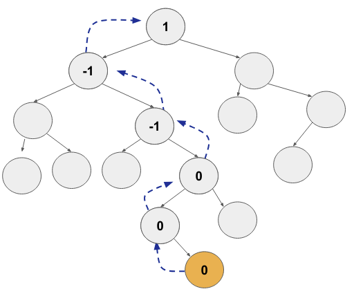

Disciplinas
-
ESTRUTURA DE DADOS-T01-2024-1 Concluído
Materiais
Vídeo 1 - [UFMS Digital] Estrutura de Dados - Módulo 3 - Unidade 2. sendProf° ministrante: Dr. Jonathan de Andrade Silva.
Conteúdo
Árvores Balanceadas.
Algoritmos de inserção e remoção.AVL - Atualização do Fator de Balanceamento.
- Vamos então analisar o impacto do Fator de Balanceamento na AVL, após inserir 1 nó.
- Devemos então percorrer desde o nó inserido até a raiz pelo caminho de inserção e ir atualizando o fb.
- Ou até encontrar algum nó com fb=0.
- Como podemos ter acesso aos nós ancestrais?
- Temos que incluir mais um campo “pai” no nosso nó.
- Para termos o campo “pai” atualizado temos que ajustar o nosso algoritmo de inserção para manter o campo pai apontando para seu ancestral.
- Agora podemos caminhar para cima na árvore até a raiz.
def inserir(raiz,valor):
novo = no(valor)
if raiz==None:
raiz=novo
novo.pai=None
else:
_ , anc = buscar(raiz,valor)
conectar(anc,novo)
novo.pai=anc
atualizarFBIns(novo)
Agora temos os apontamentos para os ancestrais (“pai”):
atualizarFBIns(no):
aux = no
Enquanto aux≠vazio e aux.fb == 0 faça:
Se aux.pai.fe == aux então
aux.pai.fb = aux.pai.fb+1
Senão
aux.pai.fb = aux.pai.fb-1
aux = aux.pai
verificarRotacao(aux)

atualizarFBIns(no):
aux = no
Enquanto aux≠vazio e aux.fb == 0 faça:
Se aux.pai.fe == aux então
aux.pai.fb = aux.pai.fb+1
Senão
aux.pai.fb = aux.pai.fb-1
aux = aux.pai
verificarRotacao(aux)

AVL - Verificar rotação.
- Temos também o procedimento de ajustar o fator de balanceamento durante a remoção do nó.
- A função verificarRotacao(no) deve observar as regras e aplicar as funções de rotação, vistas na unidade 1.
AVL - Remoção.
- Durante a remoção temos também que verificar se houve o desbalanceamento nos nós ancestrais e rotacionar para balancear a AVL.
- Realizamos o procedimento de remoção como na ABB e em seguida (como no inserção):
- Atualizar o fb do ancestral que teve remoção em um dos filhos até a raiz;
- Como estamos removendo devemos considerar a subtração no fator de balanceamento, ou seja, inverter os sinais.
- Quando removemos em uma subárvore seria o equivalente a inserir na subárvore oposta.
- Aplicar os algoritmos de rotação no nó desbalanceado.
Ajustando a atualização do fator de balanceamento para a remoção.
atualizarFBRem(no):
aux = no
Enquanto aux≠vazio e aux.fb == 0 faça:
Se aux.pai.fe == aux então
aux.pai.fb = aux.pai.fb-1
Senão
aux.pai.fb = aux.pai.fb+1
aux = aux.pai
verificarRotacao(aux)
Exemplo no VISUALGO
- Insert(5,3,8,2,4,7,10,1,6,9,11,12)
- Remove(4)
Procedimento envolve então:
Busca o nó a ser removido;
Verificar o caso de remoção
Caso 1: remover nó folha;
Caso 2: remover nó com 1 filho;
Caso 3: encontrar o antecessor ou sucessor e chamar a remoção nesse nó antecessor ou sucessor.
Através do antecessor do nó removido realizar a atualização do fator de balanceamento.
Verificar o caso de rotação e rotacionar.
Referências.
CORMEN, Thomas. Algoritmos: teoria e prática. Rio de Janeiro: GEN LTC, 2013. ISBN 9788595158092. Disponível na Biblioteca Digital da UFMS.
SZWARCFITER, Jayme Luiz; MARKENZON, Lilian. Estruturas de dados e seus algoritmos. 3. ed. Rio de Janeiro, RJ: LTC, 2010. ISBN 9788521629955. Disponível na Biblioteca Digital da UFMS.